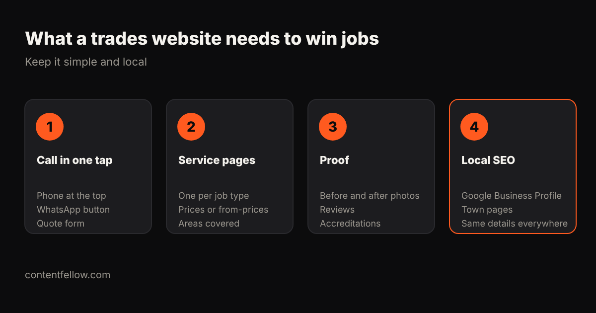

Tradesperson Website Cost UK: Plumbers, Electricians and Builders (2026)
Quick answer: A website for a UK plumber, electrician, builder or other tradesperson costs about £349 to £750 for a simple, effective site, £749 to £3,000 with quote forms, reviews and town pages, or around £69 a month on a website subscription. Agencies charge £3,000 to £10,000, which most sole traders don't need. (October 2026.)
How much does a trades website cost?
| Option | Typical UK cost | Good for |
|---|---|---|
| DIY builder | £10–£30 a month + your time | Getting something online fast |
| Budget package | £399–£1,249 one-off | Basic brochure site |
| ContentFellow Launch | £349 one-off | Up to 7 pages: services, areas, contact |
| ContentFellow Grow | £749 one-off | Quote form, reviews, blog, SEO setup |
| Build Fellow subscription | £69 a month | No upfront cost, changes included |
| Agency | £3,000–£10,000 | Larger firms with multiple teams |
UK reference prices: Cheap Web Design from £399+VAT, Juggernaut Tech £499–£1,249, freelancers typically £500–£3,000.

What should a trades website include?
- Call in one tap: phone number at the top of every page, a WhatsApp button and a short quote form.
- A page for each service: boiler repair, rewiring, extensions. Show prices or "from" prices and the areas you cover.
- Proof: before and after photos, reviews, Gas Safe/NICEIC/TrustMark details if you have them.
- Local SEO: a Google Business Profile, a page for each main town you work in, and the same name, number and address everywhere.
What not to pay for
- A big custom design. Customers want to call you, not admire animations.
- Expensive "SEO packages" before your Google Business Profile and reviews are sorted.
- Lead-generation sites that charge per lead if your own site can bring calls direct.
ContentFellow websites for trades
Launch £349 or Grow £749 one-off, or the Build Fellow at £69 a month with hosting and changes included. Keep it secure with Care from £49 a month. See development packages →
Frequently asked questions
How much does a plumber's website cost in the UK?
Most plumbers need a simple site costing £349 to £750, or a monthly plan around £69. Agency builds of £3,000 or more are rarely necessary.
What should an electrician's website include?
One-tap call, a page per service, areas covered, reviews, accreditations like NICEIC, and a quote form.
Do tradespeople need SEO?
Local SEO, yes: Google Business Profile, reviews and town pages bring most calls. Start there before paying for wider SEO.
Is a Facebook page enough instead of a website?
It helps, but a website ranks on Google, appears in AI answers and looks more trustworthy for bigger jobs.
How long does a trades website take to build?
About 1 to 2 weeks for a simple site once you've sent photos, services and areas covered.
Sources: Cheap Web Design, Juggernaut Tech, WebPulse Lab (2026); ContentFellow package prices. Last updated 17 October 2026.